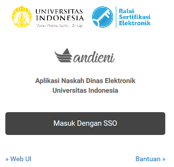
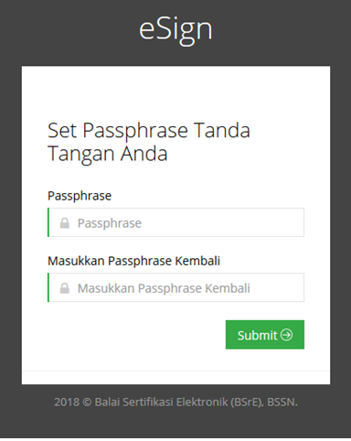

Registrasi eSign¶
Catatan
Menu pendaftaran hanya ditujukan untuk PIMPINAN.
Catatan
Fakultas yang akan menerapkan bagi PIMPINAN UNIT dan DOSEN, Maka Dekan Fakultas/ Direktur Program Vokasi/ Sekolah Pascasarjana perlu membuat rekomendasi penerbitan tanda tangan digital untuk yang bersangkutan.
Login¶
Silahkan login ke andieni.ui.ac.id dengan akun SSO anda
Peringatan
pastikan akun anda telah terdaftar pada Andieni, hubungi Helpdesk jika anda kesulitan untuk Login
Email OSD¶
Anda akan menerima 3 email dari osd [otoritas sertifikat digital] :
Email pertana - [BSrE] Login Information : berisi informasi akun anda untuk masuk ke portal bsre
Email kedua - [eSign] Pendaftaran Sertifikat : berisi link untuk membuat passphrase
Email ketiga - [BSrE] Certificate Issued : Email ini menandakan sertifikat anda telah terbit dan dapat digunakan pada Andieni
PASSPHRASE¶
Passphrase adalah semacam PIN yang hanya boleh diketahui oleh pemilik tanda tangan digital. Passphrase minimal terdiri dari 8 karakter. Disarankan berupa frase, hindari password umum seperti tanggal lahir, kota lahir
Peringatan
lupa akan passphrase maka sertifikat digital harus di batalkan dan membuat penerbitan baru
Durasi proses penerbitan tanda tangan digital menyesuaikan dengan jumlah penerbitan tanda tangan digital di bagian layanan dari BSrE. Apabila anda belum mendapatkan ketiga atau salah satu dari email tersebut silahkan kontak helpdesk Andieni.
Catatan
eSign berlaku dengan durasi 2 tahun sejak diterbitkan.
Tidak termasuk Naskah Dinas Elektronik¶
Catatan
Peraturan Rektor Nomor 30 Tahun 2019, Pasal 82D menjelaskan tentang tidak termasuk naskah dinas elektronik
Naskah Dinas diterbitkan berdasarkan Kitab Undang-Undang Hukum Pidana
Naskah Dinas berdasarkan kesepakatan ditetapkan dalam bentuk tercetak, tanda tangan basah, dan cap dinas
Hukum Tata Usaha Negara bersifat konkret, individual, dan final menimbulkan akibat hukum bagi seseorang atau badan hukum perdata
Naskah Dinas menimbulkan pembebanan keuangan negara
Naskah Dinas merupakan perbuatan hukum perdata
Materi Sosialisasi Balai Sertifikasi Elektronik¶